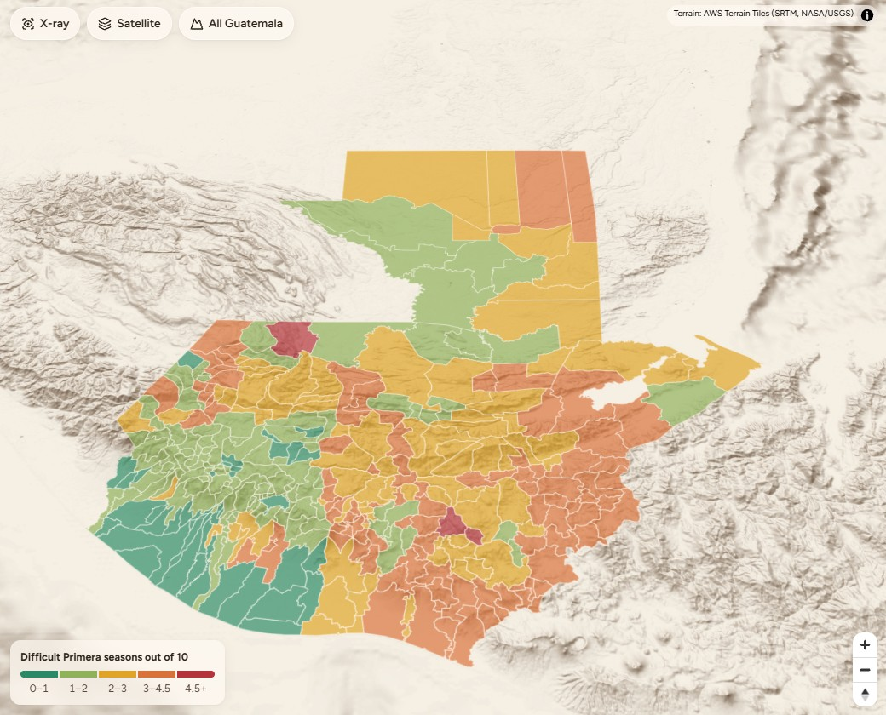
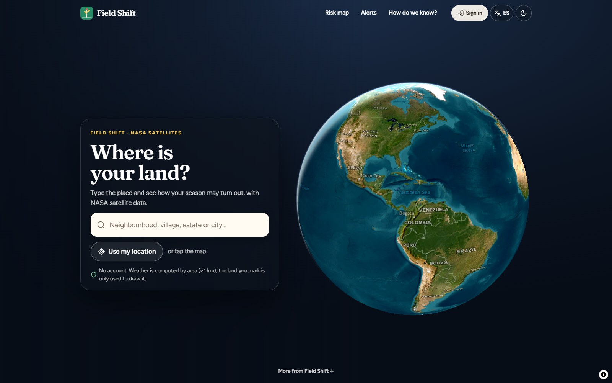
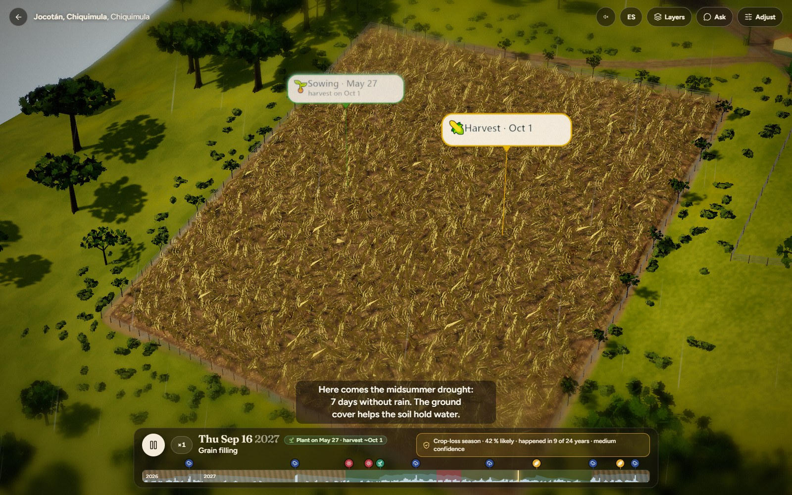
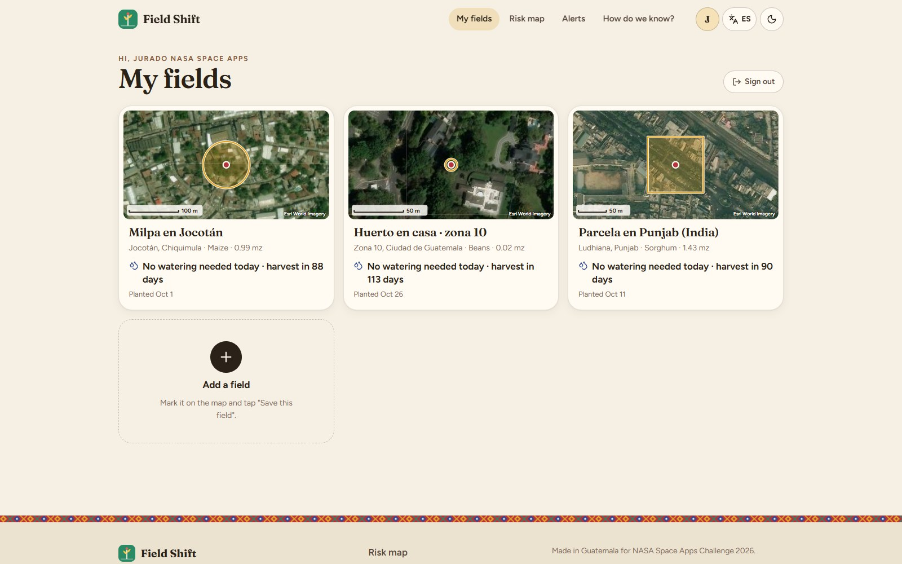
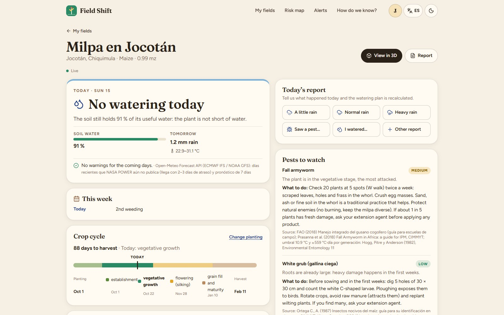
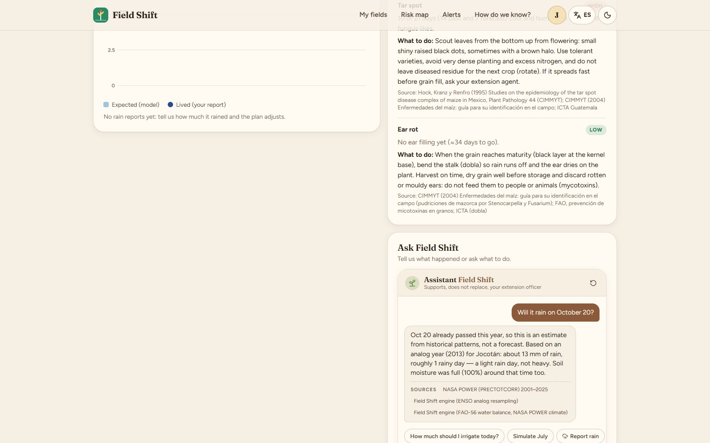
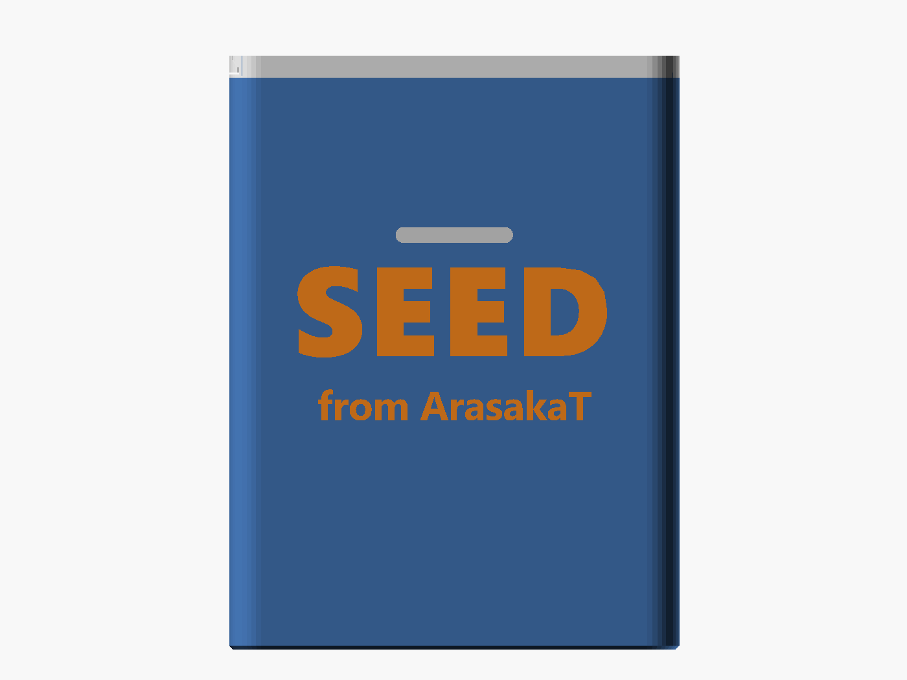
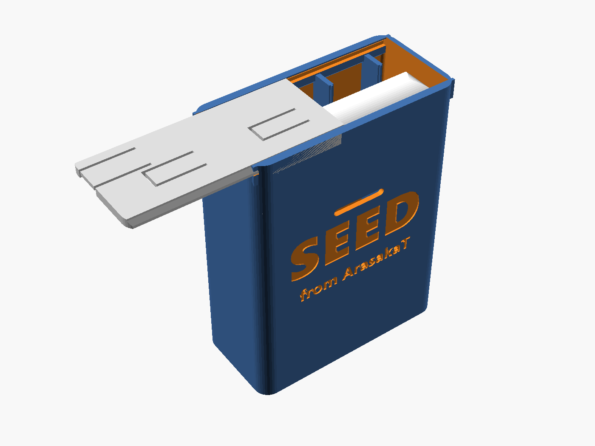

people in Guatemala in acute food insecurity (IPC Phase 3+), May–Aug 2025: 19 % of the country.
seasons lost in Jocotán (Dry Corridor) with today's milpa, all seasons 2001–2025.
is what these farmers already use. Not farm apps, not GIS.


Search any place on Earth or draw the exact plot. No account needed to try it.

Your own plot, day by day: rain, dry spells, growth, sowing and harvest, with the odds and a confidence level.

An account with your fields: watering today, the week ahead, pests, a chat per field, WhatsApp alerts.
right rain tercile in Chiquimula, 25-year leave-one-out hindcast (chance 33 %; CI 52–78 %)
nationwide: not distinguishable from chance, so probabilities are shrunk toward climatology
documented droughts 2001–2025 flagged in Jocotán (4 false alarms)
Brier score of the AI model vs 0.161 for plain statistics (leave-one-year-out)


arasakat-seed.vercel.app
English by default, ES button. Sign in → demo account: 3 saved fields (Jocotán, Guatemala City, Punjab).
Will it rain on October 20? → yes/no with a probability and its source: the 16-day forecast if the date is close, otherwise rain frequency for that date ±3 days in 2001–2025 (NASA POWER), by El Niño state.
Same bot: location pin, plan, video, report, voice notes, daily alerts.


hardware/).dry-spell alerts confirmed in Jocotán, replaying the 2026 season with each morning's forecast; 0 false alarms
best lead time: warned on 17 Oct 2026 before an 8-day dry spell (median 2 days)
heavy-rain alerts confirmed (21 % precision vs 6 % by chance). Harder; we publish it.
t/ha/yr of erosion in Jocotán with a mucuna/canavalia cover crop; bare soil 260 → 115 days a year
NASA POWER fetched on demand for any coordinate; outside Guatemala the badge says “no local validation”
never replaces the farmer and the extension agent. Next: pilot with MAGA extension agents, Mayan languages, more SEED units.
Use of AI, declared. The idea and the scientific method are the team's. We used Claude Code (Anthropic) to write and test code and to draft English texts; the team reviewed it. In the product, Claude only explains numbers computed by the engine and never invents them. Narration uses synthetic speech (edge-tts); voice notes are transcribed with faster-whisper. No AI-generated images or video.
Data: NASA POWER, NASA GIBS (MODIS, GPM IMERG), NEX-GDDP-CMIP6, SRTM; ECMWF IFS & SEAS5 and NOAA GFS via Open-Meteo; ESA WorldCover, Sentinel-2; ISRIC SoilGrids; OpenStreetMap; Overture Maps.
See your next season before you plant it.